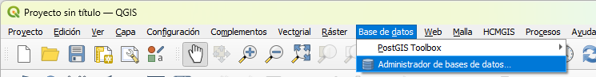
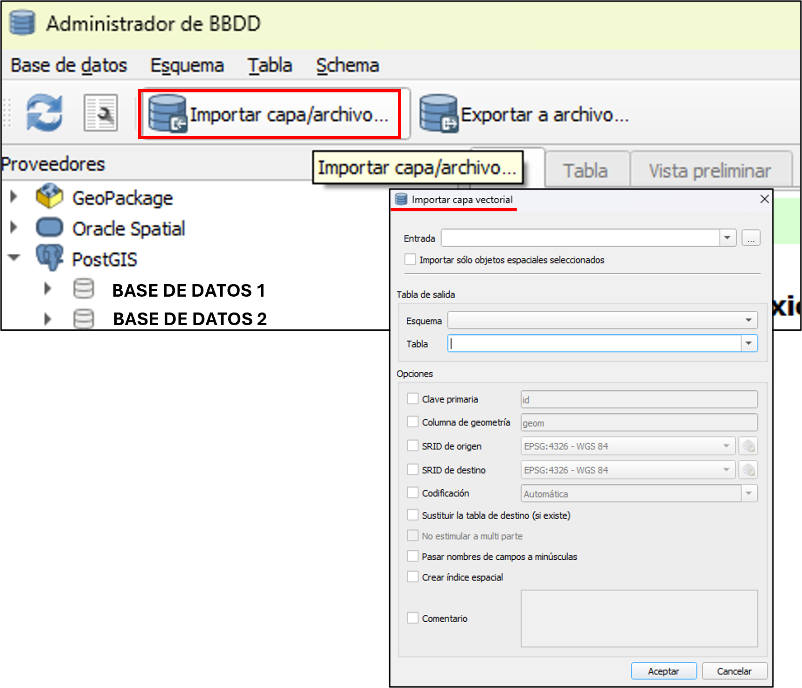

Integración con QGIS
Conexión a PostgreSQL desde QGIS
Versión de QGIS: Verifique que QGIS esté actualizado a la versión 3.40.9 para asegurar compatibilidad con extensiones y complementos de acceso a PostgreSQL.
Verificación de acceso a la red: Para comprobar la conectividad al servidor y al puerto (IP del computador) donde se encuentra la base de datos PostgreSQL.
Abra PowerShell de Windows desde el buscador o desde el ejecutador de programas (tecla de Windows+R).

Escriba el siguiente código en Windows PowerShell y oprima Enter desde su teclado:
Test-NetConnection <IP computador> -Port 5432En IP computador digite el código donde se encuentra ubicada la base de datos o el referente al servidor según corresponda (información se encuentra en el archivo pg_service.conf). Por defecto, el puerto es 5432, normalmente no se modifica, sin embargo puede reemplazarlo en caso de ser necesario.
El enunciado TRUE indica que sí puede acceder desde su computadora al puerto en el que se encuentra ubicada la base de datos. La conexión está lista para iniciar el proceso de vinculación a la base de datos.

Si no puede conectarse, revise la configuración de los datos del IP del computador o servidor, del puerto, así como la red desde la que está intentando acceder.
Archivo pg_service.conf:
En primer lugar, compruebe si existe una carpeta denominada postgresql copiando la siguiente ruta en el buscador de archivos de su ordenador:
%APPDATA%\postgresql\
SI no existe la carpeta arrojará un error, entonces cree la carpeta denominada postgresql, escribiendo la siguiente ruta en el explorador de archivos:
%APPDATA%
En la carpeta creada, guarde el archivo pg_service.conf enviado desde la oficina principal, el cual contiene la configuración de conexión a la base de datos y reconocerá la información consignada durante la creación de la conexión e ingreso:

La estructura del archivo pg_service.conf es la siguiente:
[Base de datos] = Nombre del servicio, el cual tendrá el mismo nombre de la base de datos. host=Dirección del servidor al que se conectará el sistema (IP o dirección del dominio). port=Puerto de conexión al servicio (base de datos o servidor). dbname=Nombre de la base de datos a la que el sistema se conectará. sslmode=prefer - Conexión.
Activación de la contraseña maestra y creación de credenciales cifradas
Este paso es fundamental para proporcionar seguridad a la información que se está visualizando.
Abra QGIS, en el menú diríjase a Configuración y seleccione Opciones.

En la ventana desplegada busque Autenticación, le solicitará la contraseña maestra, una clave única implementada por el software QGIS para proteger las credenciales de conexiones como a la base de datos postgreSQL, acuérdese de ella porque en caso de pérdida no se podrá recuperar. Digítela y de click en Aceptar. Vale aclarar que la contraseña maestra y la solicitada para el acceso directamente a la base de datos, son diferentes.

Posteriormente, en la ventana de Autenticación, vaya a Añadir nueva configuración de autenticación y complete los datos solicitados en la ventana desplegada:
Nombre: Asigne un nombre a la conexión dentro de QGIS. Sirve como identificador para usted y no afecta la base de datos.
Seleccione Basic authenthication.
Nombre de usuario: El asignado acorde a la/s zona/s que trabaja.
Contraseña: La asignada para el ingreso a la base de datos.
Los campos restantes se dejan sin información.

Creación de la conexión a PostgreSQL
En esta sección se establecerá la conexión a PostgreSQL para tener acceso a la base de datos.
En la barra de herramientas busque Administrador de fuentes de datos, en la nueva ventana vaya a Navegador y de click derecho en PostgreSQL. En el menú desplegado, seleccione Conexión nueva.

Enseguida aparecerá la ventana Crear una nueva conexión a PostGIS.

Diligencie los datos que solicitan:
Nombre: Asigne un nombre a la conexión dentro de QGIS a la base de datos. Sirve como identificador para usted.
Servicio: Nombre de la base de datos o service name que se encuentra en el archivo pg_service.conf. Diligenciar este campo permite establecer la conexión sin escribir el host, puerto, etc.
Anfitrión: Dirección del servidor donde se encuentra la base de datos, puede ser el IP del computador o un dominio.
Puerto: Número del puerto en el que PostgreSQL recibe conexiones. Por defecto es 5432 y normalmente no se cambia.
Base de datos: Nombre de la base de datos dentro de PostgreSQL a la cual se conectará.
Modo SSL: Seleccionar Preferir.
En el apartado de Autenticación, de click en Crear una nueva configuración de autenticación y en el menú desplegable seleccione el nombre que asignó previamente en el diligenciamiento de la autenticación (Numeral 4).
Finalmente, click en Probar conexión, en caso de ser exitosa, podrá observar el enunciado del éxito de la conexión y enseguida diríjase al apartado Ingreso a la base de datos, en caso contrario, continúe en esta sección.

Problema de conexión a PostgreSQL desde QGIS:
Si no es posible establecer la conexión, diríjase a Windows Powershell y digite el siguiente código para verificar si la conexión entre el equipo desde el que está intentando acceder a la base de datos y el servidor PostgreSQL, es exitosa o no:
Test-NetConnection <IP computador o servidor > -Port 5432
El usuario es el referente al de Windows (su cuenta), IP del computador o servidor donde se encuentra ubicada la base de datos y el ´puerto normalmente es 5432 por defecto, si es necesario modifíquelo.
TcpTestSucceeded: True incica que la configuración es correcta para aceptar conexiones.
A continuación, en Windows PowerShell digite el código que se encuentra en la parte inferior. Este le permite configurar una variable de entorno en Windows, le indica a QGIS y PostgreSQL la ruta en la que se encuentra guardado el archivo pg_service.conf, debido a que no siempre reconoce dónde encontrar el archivo.
setx PGSERVICEFILE "$Env:APPDATA\postgresql\pg_service.conf"
setx: Comando en PowerShell que le permite crear o modificar variables de entorno permanentes, esos cambios se guardan incluso después de reinicar el equipo.
PGSERVICEFILE: Nombre de la varaible de entorno que se está creando y es reconocida automáticamente por PostgreSQL (y QGIS, que lo usa). Asimismo, permite indicar la ubicación del archivo pg_service.conf.
$ENV:APPDATA: Define el valor de la variable, que corresponde a la ruta de acceso al archivo pg_service.conf.
CORRECTO: se guardó el valor especificado: Variable creada correctamente en el sistema.
Ahora, diríjase a Inicio y busque QGIS, en la sección de Carpetas en el menú, seleccione Abrir y de click en OSGeo4W Shell:

El siguiente código le servirá para probar una conexión a la base de datos PostgreSQL y verificar el usuario que se conectará y la dirección IP, cópielo en la consola de OSGeo4W:
psql -h <IP computador o servidor> -p 5432 -U <nombre de usuario> -d <nombre base de datos> -c "SELECT current_user, inet_client_addr();"
El código está conformado por caracteres y la información asociada a estos, puede cambiar acorde a la base de datos y repositorio donde se encuentra almacenada. h: host (IP del computador o del servidor); p: puerto; U: usuario de postgreSQL para acceder a la base de datos; d: nombre de la base de datos. Digite la contraseña que le solicitan, en algunos casos no se ve la escritura de la misma, pero sí se está digitando. Si es exitoso, observará el cuadro de la parte inferior izquierda con los datos de su usuario e IP de su computador.

Repita nuevamente el proceso para crear la conexión a PostgreSQL desde QGIS e ingrese a la base de datos.
Ingreso a la base de datos
Una vez haya establecido la conexión a la base de datos con éxito, ingrese de la siguiente manera: en la barra de herramientas busque Base de datos y en el menú desplegado, seleccione Administrador de bases de datos, herramienta útil para conectarse, explorar (ver tablas, esquemas o capas espaciales) y administrar (ejecutar consultas SQL e importar o exportar datos) diferentes bases de datos espaciales como PostGIS:

Se abrirá una nueva ventana denominada Administrador de BBDD, en la cual se encuentra la barra de menús conformada por Base de datos, Esquema, Tabla y Schema. La barra de herramientas cuenta con las opciones Actualizar, Ventana SQL, Importar capa/archivo y Exportar a archivo. En el panel lateral derecho, se encuentra Proveedores con el listado de los distintos tipos de bases de datos que QGIS maneja. Seleccione PostGIS y en el menú desplegado, observe las bases de datos junto con los esquemas que las conforman.
Un esquema es considerado como una “carpeta” o “contenedor”, en el que se encuentran las tablas (.csv) y las capas contenidas en la base de datos, permitiendo su administración de una manera organizada. Asimismo, en el panel derecho encontrará la pestaña Info, donde se encuentra la información referente a la conexión, base de datos, esquema o capa seleccionada; Tabla para visualizar los datos de la tabla o capa seleccionada en formato tabular (como una hoja de Excel); y Vista preliminar para previsualizar espacialmente el contenido en caso de tener geometrías.

Vaya a PostGIS y seleccione la base de datos en la que se estableció la conexión.
Cargar capas al lienzo de QGIS
Ingrese a la base de datos para visualizar y editar las capas de interés. En la barra de menús seleccione Base de datos > Administrador de bases de datos. En la ventana Administrador de BBDD, diríjase a PostGIS > seleccione la base de datos de interés > esquema que contiene la/s capa/s > click derecho sobre la capa que quiere visualizar o editar > Seleccione Añadir al lienzo. Del mismo modo, se puede añadir una capa al lienzo de QGIS haciendo doble click izquierdo sobre esta.
Nota: La nomenclatura de capas, tablas y otros archivos es fundamental para la consulta de una amplia gama de análisis. Para ello, evite los espacios entre palabras reemplazándolos por guión al piso ( _ ), por ejemplo en vez de escribir “zona llanos”, escriba “zona_llanos”. En el menú desplegado encontrará las capas contenidas en el esquema seleccionado.

Una vez se ha subido la capa, puede visualzarla o editarla como normalmente lo hace desde el software QGIS. No olvide guardar sus cambios.
Importar archivos a la base de datos
Para subir a la base de datos PostgreSQL/PostGIS una capa vectorial o una tabla en formato .csv, siga los siguientes pasos:
Capa en formato .gpkg subida en el software QGIS, por ejemplo una capa denominada Puntos.

En la barra de menús, vaya a Base de datos > Administrador de bases de datos > PostGIS > click sobre la base de datos en la que subirá el archivo > Importar capa/archivo.

En la ventana Importar capa vectorial se encuentran las siguientes opciones:
Entrada: Hay dos formas de importar el archivo a la base de datos, desde el panel de capas en QGIS o desde el equipo directamente. La primera opción es importar el archivo desde en proyecto QGIS (flechas color rojo): suba la capa o tabla a QGIS y haga click en la barra del menú desplegable, podrá observar las capas que se encuentran en el proyecto, seleccione la que es de su interés. Como segunda alternativa, importe el archivo desde su ordenador (flechas color azul): haga click en el recuadro que tiene tres puntos y búsque la capa y selecciónela.
En este apartado también se encuentra la opción Importar sólo objetos espaciales seleccionados de la capa que se encuentra en el lienzo, se importarán solo las entidades espaciales que tenga seleccionadas.
Esquema: Seleccione en la base de datos el esquema stg para guardar el archivo a importar, será almacenado como stg.Puntos.
Tabla: Corresponde al nombre de la capa que importará dentro del esquema. Si desea que el nombre sea el mismo que la capa del lienzo, selecciónela en el menú desplegable (recomendado). Si prefiere cambiarlo, escríbalo en este apartado teniendo presente la nota de nomenclartura de archivos.
Marque las opciones señaladas con un hasterísco (*) y las que considere pertinentes:
Clave primaria: Nombre del campo que actuará como identificador de cada registro, normalmente es el id. Si la capa ya cuenta con esa columna, QGIS puede usarla directamente.
Columna de geometría*: Define el nombre del campo donde se guardará la geometría espacial (coordenadas de los vectores). Usualmente se denomina geom.
SRID de origen: Sistema de Referencia de Coordenadas -SRC- que tiene la capa de origen. QGIS puede reconocer el SRC de la capa automáticamente sin necesidad de especificarlo en este apartado.
SRID de destino*: SRC que tendrá la capa una vez importada, debe ser EPSG:32618 - WGS / UTM zone 18N. Puede conservar el de origen si corresponde a este o reproyectarlo. Es indispensable que las capas importadas estén proyectadas en el SRC anteriormente mencionado, con el fin de que los resultados de los análisis sean correctos y estandarizar procesos.
Codificación*: Defina la codificación del texto, es decir como se guardan los caracteres. Seleccione UFT-8 para asegurar el reconocimiento de tildes y caracteres especiales como la “ñ”.
Sustituir las capas de destino (si existe): Sustituye un archivo si tiene el mismo nombre y formato, cualquier dato previo será borrado.
No estimular a multiparte: Si las capas tienen geometría multi, como multipolígono, QGIS las dividirá en partes simples (polígonos individuales). Por defecto se déjela sin marcar para conservar las geometrías.
Pasar nombres de campos a minúsculas: Reescribe todos los nombres de las columnas a minúsculas.
Crear índice espacial*: Creación de un índice GiST sobre la columna geom que permite hacer las consultas espaciales de ua manera más eficiente. Seleccione esta opción.
Comentario: Se puede añadir una nota o descripción sobre la capa, el texto se guardará como metadato en la base de datos, es decir que proporcionan información sobre los datos. Podrá apreciar los comentarios en la ventana de Info > Información general.
Una vez tenga la información completa para la importación del archivo, de click en Aceptar y podrá observar un enunciado que le indica el éxito de la importación.

Exportar archivos desde la base de datos
cxc
xc
xc
x
c
x
i
dgsdg
- Añada
stg.veredas_normy defina simbología graduada porarea_ha. - Cree mapas temáticos combinando veredas con capas raster (NDVI, precipitación).
Consultas desde QGIS SQL
- Dato compartido para poder hacer las uniones y diferentes anaálisis.
Utilice el panel DB Manager para ejecutar SQL y crear vistas materiales.
CREATE MATERIALIZED VIEW carto.v_veredas_fuente_hidrica AS
WITH fuentes AS (
SELECT geom
FROM ref.hidrografia_principal
),
simplificado AS (
SELECT vereda_codigo,
vereda_nombre,
municipio,
ST_SimplifyPreserveTopology(geom, 5) AS geom
FROM stg.veredas_norm
)
SELECT s.*, ST_Distance(s.geom, f.geom) AS distancia_m
FROM simplificado s
CROSS JOIN LATERAL (
SELECT geom
FROM fuentes
ORDER BY s.geom <-> geom
LIMIT 1
) AS f;Recargue la vista en QGIS y configure actualizaciones automáticas tras REFRESH MATERIALIZED VIEW.
Salidas cartográficas
- Diseñe plantillas de impresión con logotipo Fedearroz en la esquina inferior.
- Exporte mapas en PDF y PNG, guardándolos en
reportes_cartografia/con nomenclaturaYYYYMMDD_tema.pdf. - Documente estilos QGIS (
.qml) en la carpetaconsultas/estilos_qgis/.
Integración con Quarto
Inserte mapas renderizados como imágenes o iframe cuando se publique el libro.
{fig-align="center"}Mantenga activos los enlaces relativos para que GitHub Pages genere el sitio correctamente.